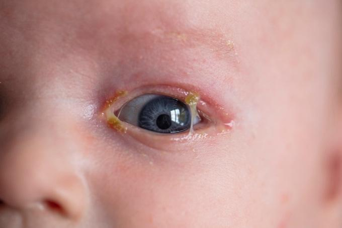
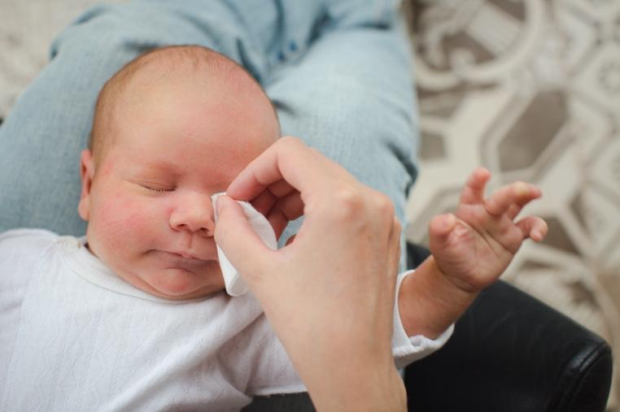

Pink eye is also called conjunctivitis. It happens when the clear layer covering the eye and the inner eyelids gets infected or inflamed. It makes the eyes look red or pink and can cause discharge or tears.
Pink eye is common in newborns. It can be caused by germs or irritants.

Newborns can get pink eye in a few ways:
The eyes can come in contact with bacteria or viruses that pass from the birth canal during delivery. Newborns are given eye drops in the delivery room to prevent infections, but the drops can cause a mild chemical conjunctivitis.
Newborns can get pink eye if something irritates the eye, like soap or dust.
Sometimes, pink eye happens if the eyes are not cleaned well right after birth.
A blocked tear duct can be confused with pink eye because they both have discharge. However, a blocked tear duct usually does not make the eye itself red.
Red or pink eyes
Swelling around the eyes
Discharge that can be thick or pus-like
Eyes may be sticky or crusted shut after sleep
Tears in the eyes
Your care team will decide on the best treatment for your baby, depending on what caused the pink eye.
If a virus caused the pink eye, it will usually go away on its own, but sometimes medicine is needed to help.
If bacteria caused it, your care team may give your baby antibiotic eye drops or ointment. Rarely, for some bacterial causes such as chlamydia or gonorrhea, a newborn may need oral antibiotics or even hospitalization. If you have antibiotics, make sure to finish all of them. If you stop early, the infection may not go away and can become harder to treat. Call your care team if you have any problems with your baby’s medicine.
Gently wipe away any discharge using a soft cloth and warm water. Always use a clean cloth each time, and for each eye, to stop germs from spreading.
For a blocked tear duct, a gentle, warm massage between the eye and the nasal area may help. Blocked tear ducts can come back. If a blocked tear duct continues beyond 6 months, your baby should be seen by an eye doctor to consider a minor procedure to open the duct.

Feed your baby: Keep giving your baby breast milk or formula. Good nutrition helps your baby heal.
Keep eyes clean: Gently wipe the eye with a clean, damp cloth to remove crusts or discharge.
Wash hands often: Always wash your hands before touching your baby or their eyes to stop germs from spreading.
Avoid touching eyes: Do not touch or rub your baby’s eyes except to gently clean them. Your care team may advise you to gently massage the lower lid of the eye if your baby has a blocked tear duct.
Keep clothes and bedding clean: Wash clothes, blankets, and towels often.
Pink eye is contagious. It can easily spread to you or your family. Here are some ways to help stop the spread of infection:
Wash hands: Everyone caring for the baby should wash their hands often.
Avoid sharing: Do not share towels, washcloths, or bedding with the baby.
Keep the baby’s eyes clean: Follow your care team’s instructions carefully.
Limit contact: Keep the baby away from other children until cleared by your care team. People with eye infections should limit contact with others until cleared by their care team.
Your care team may want to see your baby again to make sure the eyes are healing. Keep your appointment, and tell the care team if the eye infection does not get better or gets worse.
Call your care team if:
The redness or swelling gets worse.
Discharge increases or becomes thick or yellow.
Your baby’s eyes are very painful or uncomfortable.
Your baby is not eating well or seems very sleepy or fussy.
You have questions about how to care for your baby.
Get help right away if:
Your baby’s eyes suddenly become very swollen or painful.
Your baby has trouble opening their eyes.
Your baby has trouble seeing or is having trouble breathing.
Your baby seems very sick or weak.
Your baby has a fever of 100.4°F or 38°C or higher.
Thank you for trusting us with your child’s care. We are here to support you and want you and your child to feel your best. Contact us with any questions.
IF YOU HAVE A MEDICAL EMERGENCY, CALL 911 OR GO TO THE EMERGENCY ROOM.
The information presented is intended for general information and educational purposes. It is not intended to replace the advice of your health care provider. Contact your health care provider if you believe you have a health problem.
Last updated May 2025
© 2025 Mytonomy, Inc. All rights reserved.